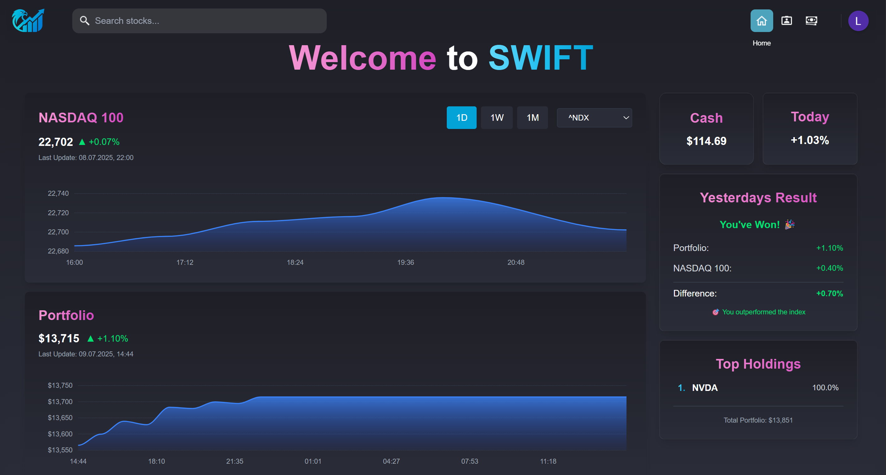
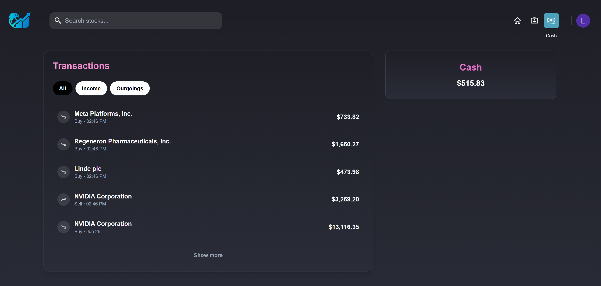
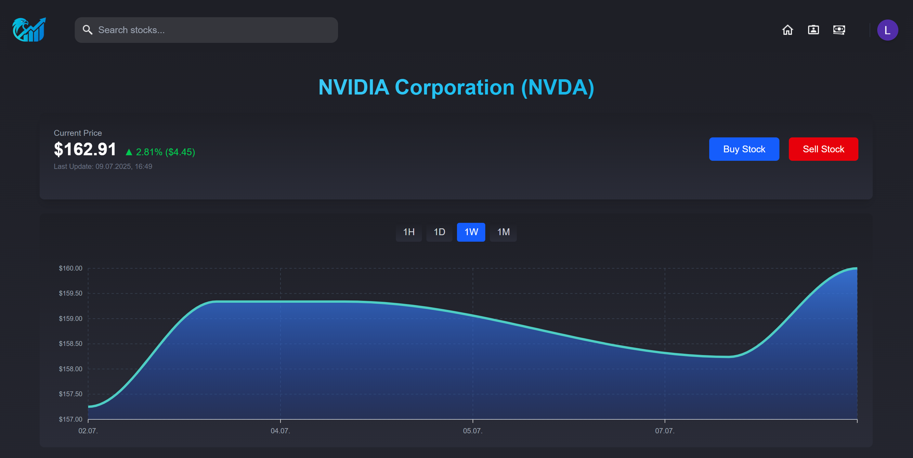
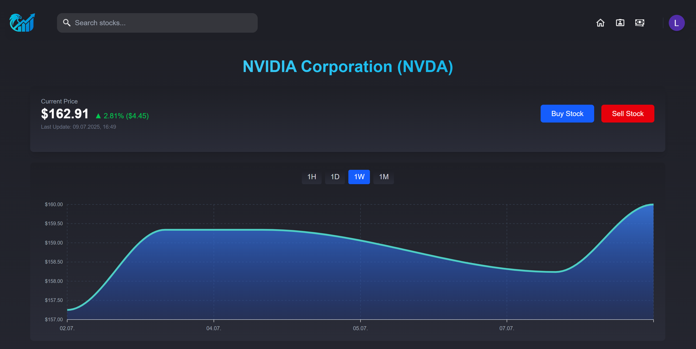

Im Rahmen der Wildauer Software Fabrik haben wir (das SWIFT Team) es uns zur Aufgabe gemacht den Aktienmarkt zu revolutionieren und dies innerhalb des SoSe 2025!
Der Name SWIFT bedeutet dabei soviel wie Software Wildau Investment and Financial Trading. Genau dies stellt auch unsere Grundidee da. Wir wollen eine Verbindung zwischen Spiel und Aktienhandel schaffen.
Die Idee ein Aktienspiel zu entwickeln hatten bereits viele Publisher und stellt dementsprechend nichts neues dar. Diese setzen jedoch auf bunte und farbenreiche Spiele, nutzen Aktienkurse und Unternehmen die sie selbst erfunden haben und arbeiten dabei oft mit Zusatzelementen, die die Komponente des Handelns in den Hintergrund stellt.
Als wir das sahen dachten wir: DAS GEHT BESSER!
Aus diesem Grund haben wir von SWIFT uns zusammengesetzt und eine Idee entwickelt, die es so auf dem Markt noch nicht gab! Ein Aktienspiel das den Spielaspekt nicht verliert, aber das Handeln in den Vordergrund stellt.
Unser Ziel ist es, dass Nutzer den Aktienmarkt in einer sicheren Umgebung ohne den Risikoaspekt des Kapitalverlustes erleben können. Dies haben wir uns zur Aufgabe gemacht und dabei ein Konzept entwickelt, welches sich an etablierten Brokern orientiert, damit also eine Art bereits funktionierenden Best Practice nutzt, und trotzdem ein neues Element hineinfügt. Dieses Element ist unsere Spielkomponente!
Sie ist ein Kampf gegen den Markt selbst. Dabei tritt man mit seinen eigenen Aktien und damit seinem Protfolio gegen den NASDAQ100 an. Die Bedingungen unter denen man gegen diesen Index spielt sind dabei real, da echte Aktienkurse verwendet werden und zum Handeln auch die Aktien des NASDAQ100 zur Verfügung stehen! So kann man sich täglich mit dem Markt messen und ihn hoffentlich irgengwann schlagen.
Reden kann man viel, wir wollen aber auch zeigen und präsentieren!
Aus diesem Grund schaut doch einmal selbst herein und überzeugt euch selbst von SWIFT (im VPN der TH-Wildau)
Zu Beginn unseres Projektes waren wir ein Team aus 7 zusammengewürfelten Studenten. Einige aus dem Bachelorstudiengang Wirtschaftsinformatik und einige aus dem Master der Wirtschaftsinformatik.
Unsere Skills und Herangehensweisen waren dabei sehr verschieden und auch die Entscheidung für eine Projektidee stellte sich als keine leichte Aufgabe heraus.
Im Endeffekt waren wir alle von der Idee eines Aktienspiels überzeugt und so kam SWIFT auf die Welt!
Als die Grundidee bekannt war kam es nun zu Tests und Diskussionen.
Wie soll so ein Spiel aussehen? Was sind die wichtigen Komponenten die wir benötigen? Wie genau ist ein solches Projekt anzugehen?
Dies sind nur ein paar Fragen die es zu klären galt!
Schnell stelten wir fest, das Ideen und Möglichkeiten der Entwickklung endlos sind. Ein Aspket der sich als größte Herausforderung darstellte war die aktuellen Kursdaten in einer möglichst kurzen Zeitspanne zu erhalten.
Auch die Entwicklung stellte uns vor Herausforderungen, da wir wie gesagt ein recht zusammengewürfeltes Team waren, bei dem die Zusammenarbeit erst erlernt werden musste.
Doch wie geht man an solche Herausforderungen heran?

Um die technischen Herausforderungen lösen zu können nutzen wir Tests unter einer Art "Jugend Forscht" Ansatz.
Das bedeutete viel Recherche zu möglichen Anbietern von Echtzeitkursdaten, sowie der Auslastung derer Grenzen.
Dabei haben wir von APIs aus dem Internet über Python Bibliotheken ein breites Spektrum abgedeckt um eine passende Lösung zu finden.
Im Endeffekt stellte sich die yFinance Bibliothek als perfekte Lösung heraus. Mit ihr können wir minütlich aktuelle Kurse abfragen ohne dabei gebannt zu werden.
Auch Technologieentscheidungen für Datenbank, Frontend und Backend haben wir nicht einfach gewürfelt.
Hier nutzten wir ein Zusammenspiel aus Teamerfahrungen und Lasttests. So nutzen wir Technologien in denen Teammitglieder bereits Erfahrungen sammeln konnten. Dadurch haben wir sichergestellt, dass es einen Ansprechpartner bei Fragen gibt und somit Teammitglieder die noch weniger Erfahrungen hatten einen leichteren Einstieg hinbekamen.
Dennoch mussten die Technologien mit der Masse an Daten klarkommen. Dies wurde im Vorhinein durch Lasttests verifiziert und somit eine Technologienentscheidung getroffen.
Im Endeffekt sorgte dies für folgenden Tech-Stack:
Auch die zwischenmenschlichen Herausforderungen gingen wir gemeinsam an. So mussten wir als Team eine Einteilung finden in der sowohl produktiv, als auch konstruktiv gearbeitet werden kann.
Nach den ersten Wochen des Projektes zeichnete sich dabei ab wer welche Aufgaben übernehmen und wer am Besten in welchem Bereich eingesetzt werden kann.
Wir wählten dabei eine Einteilung in zwei Teams (Frontend und Backend). Wobei wir folgende Personen je Team einteilten:
| Name | Aufgabe |
|---|---|
| Paul Lorenz | Developer (Team Frontend), PO |
| Niels Grosche | Developer (Team Frontend) |
| Enrico Wölck | Developer (Team Frontend) |
| Danat Bolatbek | Developer (Team Backend) |
| Laurentz Borowsky | Developer (Team Backend) |
| Niklas Wieling | Developer (Team Backend) |
| Lukas Sontowski | Developer (Team Backend), Scrum Master |
Wie man sieht gab es noch zwei Sonderaufgaben die verteilt wurden. So übernahm Paul als Hauptideengeber die Aufgabe des Produkt Owners und hat damit eine Hand auf die Grundrichtung der Entwicklung.
Lukas hingegen übernahm die Aufgabe des Scrum Masters und überprüfte damit die Arbeitsweise, sowie die grundsätzliche Arbeit innerhalb der Sprints.
Innerhalb des ersten Semesters haben wir es damit geschafft in unserer Teamkonstellation viel zu erreichen.
Wir besitzen eine Singleplayer Webapp, welche im Netz erreichbar ist. Sie besitzt einen klaren Spielfaktor und das Spiel gegen den NASDAQ100 klappt problemlos. Der Ansatz als Webapp wurde dabei gewählt um SWIFT mit all seinen Vorzügen einer möglichst großen Nutzergruppe zur Verfügung stellen zu können.
Auch der Fokus auf den Handel von Aktien wurde beibehalten, womit wir unserer Vision treu geblieben sind.
Doch warum nur unsere Lösung beschreiben, wenn ihr selbst einmal in das SWIFT Universum eintreten könnt? Dabei ist es euch möglich ganz ohne Risiken eure Trading Skills zu beweisen oder sogar zu verbessern.
Egal ob Anfänger oder Profi-Trader, jeder kann durch SWIFT lernen und den Markt aus einer anderen Perspektive erleben.
Und wer weiß, villeicht bist DU ja sogar besser als der Markt!
Probier es doch einfach aus: SWIFT (im VPN der TH-Wildau)
Wie bereits erwähnt haben wir unsere Idee ein Singleplayer Aktienspiel zu entwickeln, bei dem man gegen den NASDAQ100 antritt zum Leben erweckt.
Wir als Team sind dabei stolz auf unsere Arbeit und haben gelernt, dass man mit strukturierter Zusammenarbeit viel erreichen kann.
Neben Zeitmanagement und dem Erlernen von Technologien haben wir weitere Aspekte gelernt, die es innerhalb eines Teams zu bewältigen gilt. So sind einige Aufageben von anderen Mitgliedern abhängig und zeitkritisch. Dies zu lernen und dabei in der Kommunikation immer auf dem neuesten Stand zu bleiben ist eine Herausforderung, der wir uns gestellt haben und die wir gemeinsam angegangen sind.
Wer traurig ist und denkt SWIFT sei vorbei, den können wir beruhigen.
Wir haben noch viele Ideen auf der Liste und wollen in der Zukunft vieles weiter voran treiben und so unsere Webapp weiterentwickeln.
So steht ein Spiel gegen Freunde auf der Liste um nicht nur den NASDAQ100, sondern auch Freunde und Familie schlagen zu können. Auch weitere Indexes sollen in der Zukunft als Marktrivalen folgen.
Dies und vieles mehr steht in der Zukunft an. Wir freuen uns SWIFT für euch entwickeln zu können!


 
